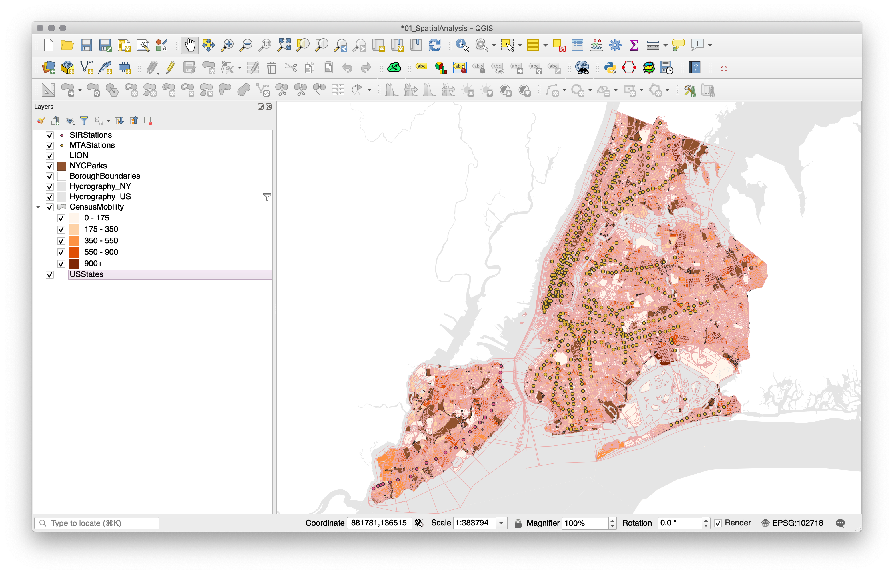
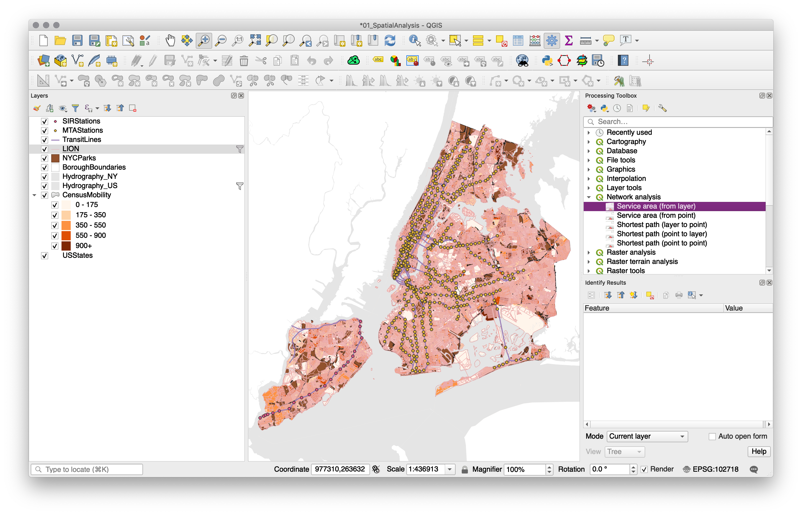
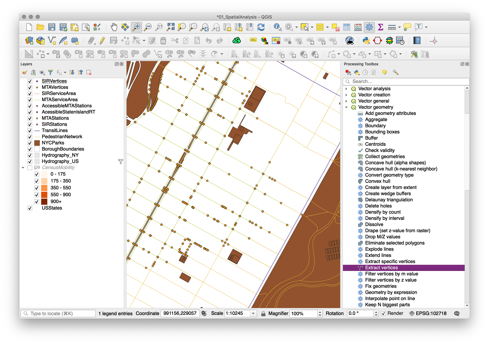
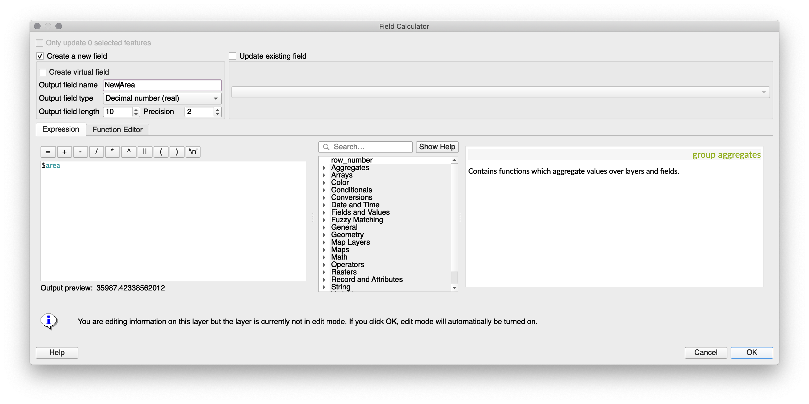
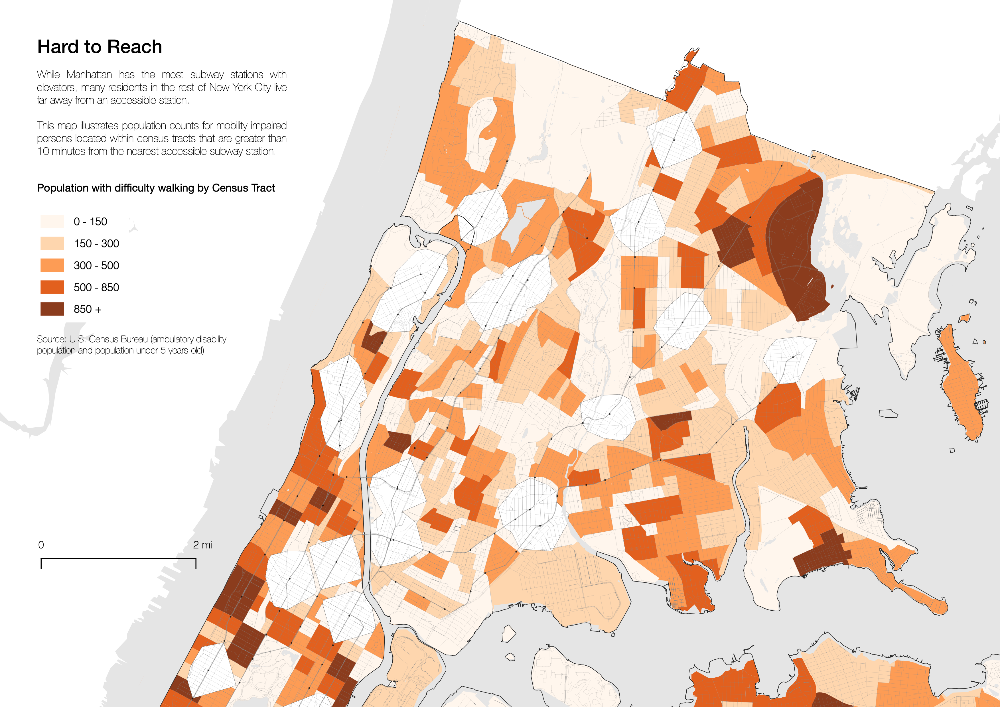

Datasets
To create these maps we will be using the following datasets:
American Community Survey - Table B99185 (Allocation of Ambulatory Difficulty for the Civilian Noninstitutionalized Population 5 Years and Over). Download from the U.S. Census Bureau FactFinder site.
American Community Survey - Table S0101 (AGE AND SEX). Download from the U.S. Census Bureau FactFinder site.
Census Tracts - New York State 2017 census tracts. Download from U.S. Census Bureau - Tiger/Line Shapefiles. Select
2017andCensus Tracts, and clickSubmit. Then, selectNew Yorkas the state and clickDownload.Boroughs - New York City boroughs. Download from NYC Planning - Open Data. Choose "Borough Boundaries (Clipped to Shoreline)", under "Borough Boundaries & Community Districts".
Hydrography - New York City hydrography. Download from NYC Open Data. Once you get to the NYC OpenData page, click
Exportand choose theShapefileformat.United States Hydrographic Polygons. Download from the Columbia University Libraries Geodata portal. Download the
Original Shapefile.United States State Boundaries. Download from the U.S. Department of Transportation. Download the
Shapefile.LION - A single line representation of New York City streets containing address ranges and other information. Download from nyc.gov
NYC Planimetric Data - A comprehensive database (file geodatase format) of the NYC Planimetric features. Download at NYC Open Data
NYC Mass Transit with Accessibility Feature. Download from the Brown Institute
A packaged file with the census and block group data can be found here. This assumes you will complete the generation of the Percentage of the population less than 5 years old or with ambulatory difficulties.map. A package of the already prepared map (with layers), is available at brwn.co/map4data.
Importing/Prepping Data in QGIS
This tutorial builds largely upon already the tutorial 2: Joins & Census Data. If you have time, it is strongly recommended to complete this tutorial before moving on to this tutorial. If you completed Tutorial 2, please open up your QGIS workspace from that tutorial. Otherwise, please download a package of the already prepared map (with layers), available at brwn.co/map4data. Links to each of the datasets can be found above at the beginning of this tutorial. Your project should have the following layers available to you:
Borough Boundaries
NYC Hydropgraphic Polygons
US Hydrographic Polygons
NYC Census Tracts with Mobility Data (accessibility)
US State Boundaries
Begin by adding the remaining layers needed for this tutorial. Those include:
NYC Parks (as found in the Planimetrics Dataset)
Staten Island Railway Stations
MTA Subway Stations
LION Layer 3 (LION) - a MultiPolyLine dataset
Upon adding each layer, be sure to rename them to names you understand. In this tutorial, we will generate over a dozen layers and coherent naming conventions will be critical in understanding which data layer you're operating on.
Once you have your workspace setup, begin by extracting the subway line features from the LION layer. Do this by accessing the Attribute Table and select Select features using an expression. Inside the query builder, we want to filter out all roads and routes that are not Subway/Rail. You should always reference the metadata of the dataset to determine what query fields you have available to you. The LION metadata document can be found alongside the dataset at nyc.gov. The query to select subway lines is "ACTIVE_FLAG" <> ''. This translates to, select anything feature that whose value for the field ACTIVE_FLAG is not empty.
Save selected features by right-clicking on the LION layer and selecting Export -> Save Selected Features As. In this window, save selected features as an ESRI Shapefile in your working directory.
Similarly, we will now select roads from the LION layer that are accessible to pedestrians. This requires a more complex argument: FeatureTyp <> 'F' AND FeatureTyp <> '9' AND FeatureTyp <> '1' AND FeatureTyp <> '7' AND FeatureTyp <> '3' AND TrafDir <> '' AND NonPed <> 'V'. Remember, this should be entered in the Select features using an expression option found via the attribute table of the LION layer. Once selected, Save selected features by right-clicking on the LION layer and selecting Export -> Save Selected Features As. In this window, save selected features as an ESRI Shapefile in your working directory.
The next step is filtering out Subway and Staten Island Railway stations that are enhanced for the mobility impaired. To do so, open the attribute table for the MTAStation layer and select only the accessible stations. Like the previous operations, use the Select features using an expression option found via the attribute table and enter "Accessible" = 'Yes'. Once selected, save a new ESRI Shapefile using the selected features. Remember that a coherent naming convention is important, as we've already generated 5 new layers. For example, AccessibleMTAStations would be an accurate description of this layer. Repeat this step for the Staten Island Railway layer, generating a new AccessibleSIRStations.
Now we are ready to run some analysis on our data.
Performing Network Analysis
For this tutorial, we are attempting to identify census tracts that have high populations of individuals who are unable to use stairs or access subway stations without the assistance of an elevator or wheelchair accessibility. In addition to this population, we are including all minors under the age of 5 in our analyis, as they're reliant on similar accessibility features for public services. To highlight these areas, we need to begin by identifying the buffer zones, or the road networks found within a 10-minute walk of the accessible subway stations.
In referencing the New York Times article, there are aspects of the mapping that can be more specific and can better represent the situation on the ground. To begin, we should always highlight how we are estimating any metric that isn't already pre-defined. For example, the 10-minute walk is a somewhat arbitrary value--specifically how to measure distance over the course of 10-minutes. Thankfully, the U.S. Department of Transportation has a reference guide on calculating speeds of this sort. They indicate that for someone in a wheelchair, travel time in urban environments with crosswalks and stoplights is 1.1m/s. This translates to 66m/minute, or 660m/10 minutes. This is the metric we will use to calculate our buffer.
Navigate to Processing in the menubar and select Toolbox. Within the toolbox that appears on the right side of the workspace, expand Network Analysis and select Service Area from Layer. Here we will generate a service area, or a graph of streets from each accessible subway station based upon cost (time or distance). In our case, cost is equal to 660m. For the vector layer representing the network, select PedestrianNetwork and for the Vector layer with start points select AccessibleMTAStations. Set the travel cost to 660, and make sure that Path type to calculate is set to Shortest (distance) and not Fastest (time). All other options can be left at their defaults. Select run, and let the algorithm process the network. This will generate a new temporary layer. Export this as an ESRI Shapefile and save it in your working directory. Repeat this step for your AccessibleSIRStations layer using the same network and cost settings. Save the output as a new ESRI Shapefile, as well.
Generating Bounding Geometry
After running network analysis on the two point datasets (AccessibleMTAStations and AccessibleSIRStations), the output is insufficient for the representation and future analysis that we'd like to conduct. To begin, we need to turn this network of roads into a polygon. To do so, we need to perform two operations.
First, we need to generate vertices at each of the line (road) endpoints (nodes). To do so, navigate to the Processing Toolbox and expand Vector geometry. Select Extract vertices. In the algorithm parameter settings, set your input layer to the first of your network outputs (MTAServiceArea). Save the temporary vertice output file as a new ESRI Shapefile (MTAVertices). Re-run this process on your SIRServiceArea, the network output generated in the previous step. Save this file as a new ESRI Shapefile (SIRVertices), as well.
Now we are able to draw a polygon based on the newly generated vertices. Navigate to your Processing Toolbox and expand Vector geometry. Select Minimum bounding geometry. For your input layer, select MTAVertices and identify the field objectid. This makes sure that the geometry is bound to the vertices of each subway station, not the collective set of vertices. For Geometry type, select Convex Hull. Once you run this process, it will again generate a temporary layer. Save this layer as a new ESRI Shapefile (MTAServiceAreaBoundary). Repeat this process for the SIRVertices layer.
Now you've generated 10-minute walking buffers around each of accessible MTA Subway station and accessible Staten Island Railway station. Unfortunately, to complete our analysis, we need these buffers in the same layer. To accomplish this, navigate to the menubar and select Vector -> Data Management Tools -> Merge Vector Layers. For the Input Layers, select the two newly generated boundary layers. Set the CRS to the shared layer CRS, and select Run. This will generate a new temporary layer. Like before, save this file as a new ESRI Shapefile (CombinedServiceBoundary).
Now is a great time to clean-up your workspace, removing any layers that won't be needed in our final analysis. A cleaned up workspace should include:
Borough Boundaries
NYC Hydropgraphic Polygons
US Hydrographic Polygons
NYC Census Tracts with Mobility Data (accessibility)
US State Boundaries
NYC Parks (as found in the Planimetrics Dataset)
Staten Island Railway Stations
MTA Subway Stations
Transit Lines (as generated from LION)
Pedestrian Road Network (as generated from LION)
Service Area Boundary (as generated from our Vertices vector layer)
Using layer groups can help keep your workspace clean. Now we could style the map and be done, but this would result in a false picture of what the census tract populations actually are surrounding accesible subway/staten island railway stations.
Geoprocessing
To properly communicate areas in which there exists a high count of mobility impaired and minors under the age of five, it is important to conduct basic geoprocessing. For instance, the Service Area Boundaries intersect many of the census tracts. For this reason, we should not show their mobility impaired population as the total population in that census tract. Instead, we should try and come up with a more accurate estimate based on the proportion of area. If we had more time, we would allocate population by building outline via the PLUTO dataset, but we will use proportion of area for this exercise.
To begin, we need to add a new field to our NYC Census Tracts with Mobility Data (accessibility) layer. To do so, open the Attribute Table and select Field Calulator. In the query field, enter the value $area. The field name should be set to Area and the field type should be set to Decimel Number Real. Once you select OK, each row will gain a column with a value set to its polygonal area.
Now, we need to calculate overlap of the Service Boundary Area on our Census Tract layer. To start, we need to generate a single polygon for all service boundary areas that overlap. To do so, navigate to your menubar and select Geoprocessing -> Dissolve. Set your input layer to the Service Area Boundary layer (as generated from our Vertices vector layer). This will generate a new temporary layer. Save this as a new ESRI Shapefile.
Now we will breakup our census tracts by overlaps from this newly generated JoinedServiceAreaBoundary layer. Navigate to your menubar Vector -> GeoProcessing Tools -> Union. For your input layer, select your Census layer and for the overlay, select your Joined Service Area Boundary layer. Once you select run, this will generate a new temporary layer. Save this as an ESRI Shapefile, CensusSplitByBuffer.
Now we have the layers needed to run analysis that can generate an estimated population based on proportional area. To do so, open your attribute table of your newly generated Census layer and once again, navigate to the Field Calculator. Begin by navigating to the query field and entering the value $area. The field name should be set to NewArea and the field type should be set to Decimel Number Real. Once you select OK, each row will gain a column with a value set to its newly generated polygonal area based on the Union operation. In instances in which there was no overlap between the census tract and the buffer, the area will remain constant. Next, we will calculate the proportional population of the new area. To do so, once again enter the Field Calculator.

Create a new field labled NewImpPop and set it to Whole Number (Integer). In the query, enter the following equation: (NewArea / Area) * TotDiff. This will generate a new impaired population based on the proportional area of space remaining after removing any buffer overlap. Exit out of the Attribute Table and be sure to save your changes.
Visualizing the Mobility Analysis
Now let's visualize our map. Below are settings that produce a quality map that is more indicative to a reader where there populations affected by the MTA's inadequate station access. Items are ordered as they should be layered, top to bottom, in QGIS.
MTA Stations: Simple Marker, .5mm, #000000, No Pen Stroke, 75% Opacity
SIR Stations: Simple Marker, .5mm, #000000, No Pen Stroke, 75% Opacity
Transit Lines: Simple Line, .2mm, #888888, 75% Opacity
Borough Boundaries: Simple Fill, No Fill, Stroke width .15mm, #000000
Hydrography NYC: Simple Fill, #e5e5e5, No Stroke
Hydrography US: Simple Fill, #e5e5e5, No Stroke
Hydrography US: Simple Fill, #e5e5e5, No Stroke
Pedestrian Roads: Simple Line, .05mm, #888888, 50% Opacity
Service Area Boundary: Simple Fill, #ffffff, .1mm Dashed Line
Census Data: Graduated Ramp, Color Method, Oranges, Trim, Column: New Population:
0-150: Simple Fill, #fff5eb, 90% Opacity, No Pen
150-300: Simple Fill, #fed2a6, 90% Opacity, No Pen
300-500: Simple Fill, #fd9243, 90% Opacity, No Pen
500-850: Simple Fill, #df4f05, 90% Opacity, No Pen
850+: Simple Fill, #7f2704, 90% Opacity, No Pen
NYC Parks: Simple Fill, #ffffff, No Stroke
US States: Simple Fill, #ffffff, No Stroke